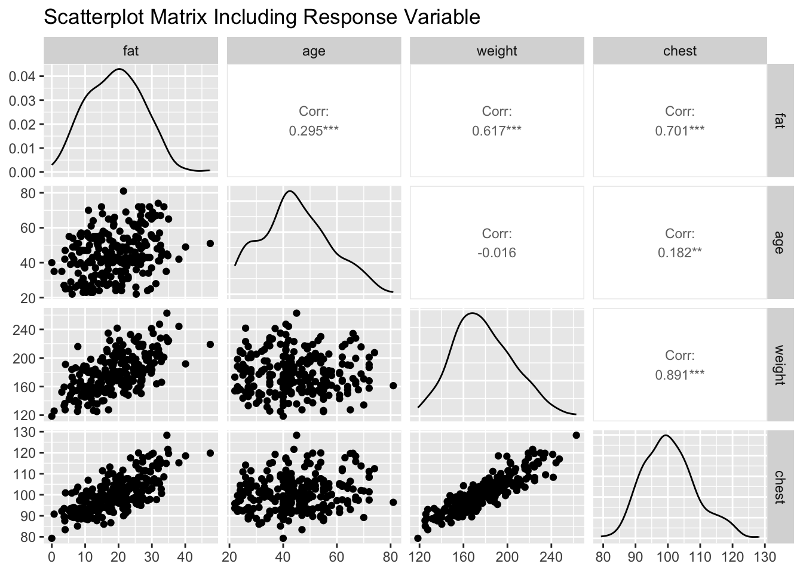
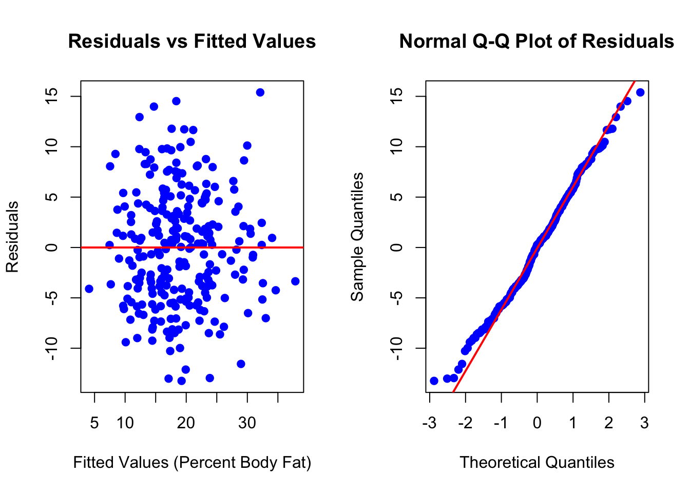

Reminder of the honor code: Lab assignments are to be completed individually!
Objective
In this lab assignment, you will perform multiple regression analysis and model selection using the bodyfat dataset. You will explore the relationships between various explanatory variables and the response variable (percent body fat), assess regression assumptions, conduct hypothesis tests, and apply model selection techniques to build an optimal predictive model.
Data Description
The bodyfat dataset contains the following variables:
fat: Percent body fat
age: Age in years
weight: Weight in pounds
height: Height in inches
chest: Chest circumference in centimeters
Problem 1: Identifying Highly Correlated Explanatory Variables
Based on both the scatterplot matrix of the explanatory variables and the correlation matrix, which two explanatory variables are “highly correlated”? Explain. You must use and refer to both the scatterplot matrix and the correlation matrix in your explanation of why these two variables are considered highly correlated. (Include the scatterplot matrix here. You do not have to include the correlation matrix.)
Problem 2: Variable Selection Based on Correlation
In the Lab 4 Notes, a strategy was shown to help with deciding which highly correlated explanatory variable to remove. From that strategy, which of the two highly correlated explanatory variables mentioned in the lab notes would be removed? Explain why that variable would be removed.
Based on the strategy outlined in the Lab 4 Notes, the variable height would be removed. This decision is made because weight has a stronger theoretical or practical relevance to the response variable (fat) compared to height. Additionally, removing height helps to reduce multicollinearity in the model while retaining the explanatory variable that provides more meaningful information for prediction.
Problem 3: Assessing Regression Assumptions
Include the graphical displays to assess the linearity, constant variation, and normality conditions (scatterplot matrix that includes the response variable, residual plot, and normal probability plot of the residuals).
# Select response and remaining explanatory variables after removing heightresponseVar <- bodyfatData$fatselectedExplanatory <- bodyfatData %>%select(age, weight, chest)# Fit the initial multiple regression modelinitialModel <-lm(fat ~ age + weight + chest, data = bodyfatData)summary(initialModel)
Call:
lm(formula = fat ~ age + weight + chest, data = bodyfatData)
Residuals:
Min 1Q Median 3Q Max
-13.2414 -4.1816 0.2451 4.0368 15.3927
Coefficients:
Estimate Std. Error t value Pr(>|t|)
(Intercept) -49.83857 5.84307 -8.530 1.52e-15 ***
age 0.13021 0.03201 4.068 6.40e-05 ***
weight 0.04205 0.03249 1.294 0.197
chest 0.55173 0.10953 5.037 9.15e-07 ***
---
Signif. codes: 0 '***' 0.001 '**' 0.01 '*' 0.05 '.' 0.1 ' ' 1
Residual standard error: 5.762 on 246 degrees of freedom
Multiple R-squared: 0.5233, Adjusted R-squared: 0.5174
F-statistic: 90 on 3 and 246 DF, p-value: < 2.2e-16
# Scatterplot matrix including the response variableggpairs(data = bodyfatData %>%select(fat, age, weight, chest),title ="Scatterplot Matrix Including Response Variable",upper =list(continuous =wrap("cor", size =3)),lower =list(continuous ="points"),diag =list(continuous ="densityDiag"))

# Residual plotpar(mfrow =c(1, 2)) # Arrange plots side by sideplot(initialModel$fitted.values, initialModel$residuals,main ="Residuals vs Fitted Values",xlab ="Fitted Values (Percent Body Fat)",ylab ="Residuals",pch =19, col ="blue")abline(h =0, col ="red", lwd =2)# Normal probability plot of residualsqqnorm(initialModel$residuals,main ="Normal Q-Q Plot of Residuals",pch =19, col ="blue")qqline(initialModel$residuals, col ="red", lwd =2)

par(mfrow =c(1,1)) # Reset plotting layout
Problem 4: Assessing Linearity
Using the appropriate graph, discuss whether or not the linearity condition is satisfied. Make sure to reference which plot you are using to assess this condition.
Potential Response:
See output
Problem 5: Assessing Constant Variation
Using the appropriate graph, discuss whether or not the constant variation condition is satisfied. Make sure to reference which plot you are using to assess this condition.
Potential Response:
See output
Problem 6: Assessing Normality
Using the appropriate graph, discuss whether or not the normality condition is satisfied. Make sure to reference which plot you are using to assess this condition.
Potential Response:
See output
Problem 7: F-test for Overall Significance
Perform an F-test to determine if at least one explanatory variable is helpful in predicting the response.
a.
State the null and alternative hypotheses in words.
Null Hypothesis\(H_0\): None of the explanatory variables (age, weight, chest) are associated with the response variable (fat). In other words, all regression coefficients are equal to zero.
\(\beta_1 = \beta_2 = \beta_3 = 0\)
Alternative Hypothesis\(H_a\): At least one of the explanatory variables (age, weight, chest) is associated with the response variable (fat). In other words, at least one regression coefficient is not equal to zero.
At least one \(\beta_1,\beta_2,\beta_3 \ne 0\)
b.
Using the regression output, report the F-statistic with degrees of freedom and the p-value. (No calculations are necessary! Include the regression output from R – please put the output below your answer to this question.)
# Perform the F-test by summarizing the initial modelsummary(initialModel)
Call:
lm(formula = fat ~ age + weight + chest, data = bodyfatData)
Residuals:
Min 1Q Median 3Q Max
-13.2414 -4.1816 0.2451 4.0368 15.3927
Coefficients:
Estimate Std. Error t value Pr(>|t|)
(Intercept) -49.83857 5.84307 -8.530 1.52e-15 ***
age 0.13021 0.03201 4.068 6.40e-05 ***
weight 0.04205 0.03249 1.294 0.197
chest 0.55173 0.10953 5.037 9.15e-07 ***
---
Signif. codes: 0 '***' 0.001 '**' 0.01 '*' 0.05 '.' 0.1 ' ' 1
Residual standard error: 5.762 on 246 degrees of freedom
Multiple R-squared: 0.5233, Adjusted R-squared: 0.5174
F-statistic: 90 on 3 and 246 DF, p-value: < 2.2e-16
c.
State a conclusion from the F-test in the context of the problem.
Problem 8: T-tests for Individual Explanatory Variables
8.
For each explanatory variable,
a.
Report the t-statistic with degrees of freedom and the p-value for the t-test (testing if that explanatory variable explains the response variable after accounting for the effects of the other variables).
# Extract summary of the initial modelmodelSummary <-summary(initialModel)# Extract coefficientscoefficients <- modelSummary$coefficients# Create a table of t-statistic, degrees of freedom, and p-valuest_table <-data.frame(Variable =rownames(coefficients),`t-Statistic`= coefficients[, "t value"],`Degrees of Freedom`= modelSummary$df[2],`p-Value`= coefficients[, "Pr(>|t|)"])# Display the tableprint(t_table)
State a conclusion in the context of the problem based on the p-value from the t-test. (You should have three separate sentences, one for the conclusion for each explanatory variable. Much of each sentence may contain the same wording, but you still need to write three separate sentences with three separate conclusions.)
Potential Response:
See output
Problem 9: Backwards Selection Process
9.
Suppose a backwards selection process was performed. Would any of the explanatory variables drop out? Why or why not? If so, which one would drop out first? Why?
# Perform backwards selection using stepAIC from MASS packagelibrary(MASS)# Initial modelinitialModel <-lm(fat ~ age + weight + chest, data = bodyfatData)# Perform backwards selectionbackwardModel <-stepAIC(initialModel, direction ="backward", trace =FALSE)# Summary of the final model after backward selectionsummary(backwardModel)
Call:
lm(formula = fat ~ age + chest, data = bodyfatData)
Residuals:
Min 1Q Median 3Q Max
-13.5273 -4.2214 0.1006 3.9929 14.7469
Coefficients:
Estimate Std. Error t value Pr(>|t|)
(Intercept) -54.58599 4.55434 -11.985 < 2e-16 ***
age 0.11366 0.02939 3.868 0.000141 ***
chest 0.68065 0.04560 14.926 < 2e-16 ***
---
Signif. codes: 0 '***' 0.001 '**' 0.01 '*' 0.05 '.' 0.1 ' ' 1
Residual standard error: 5.769 on 247 degrees of freedom
Multiple R-squared: 0.52, Adjusted R-squared: 0.5161
F-statistic: 133.8 on 2 and 247 DF, p-value: < 2.2e-16
Potential Response:
See output
Problem 10: Final Model After Backwards Selection
10.
If needed, perform a backwards selection process to obtain a model with only significant explanatory variables. Use the model with only significant explanatory variables to answer these questions:
a. Include the regression output of your final model.
# Summary of the final model after backward selectionsummary(backwardModel)
Call:
lm(formula = fat ~ age + chest, data = bodyfatData)
Residuals:
Min 1Q Median 3Q Max
-13.5273 -4.2214 0.1006 3.9929 14.7469
Coefficients:
Estimate Std. Error t value Pr(>|t|)
(Intercept) -54.58599 4.55434 -11.985 < 2e-16 ***
age 0.11366 0.02939 3.868 0.000141 ***
chest 0.68065 0.04560 14.926 < 2e-16 ***
---
Signif. codes: 0 '***' 0.001 '**' 0.01 '*' 0.05 '.' 0.1 ' ' 1
Residual standard error: 5.769 on 247 degrees of freedom
Multiple R-squared: 0.52, Adjusted R-squared: 0.5161
F-statistic: 133.8 on 2 and 247 DF, p-value: < 2.2e-16
Final Model Regression Output:
See output
b.
Write the least-squares regression equation. Define the terms in the equation (i.e., what the x’s and \(\hat{y}\) represent in the context of the problem).
Interpret the coefficient of Age in the context of the problem.
Potential Response:
See output
d.
Predict percent body fat for a 23-year-old who is 73 inches tall, and has a chest circumference of 120 cm. Use R to find this predicted value.
# Define the new data point# Note: Since 'height' was removed from the model, it is not included in the predictionnewData <-data.frame(age =23,weight =180, # Assuming weight in poundschest =120# Chest circumference in centimeters)# Predict percent body fatpredictedBodyFat <-predict(backwardModel, newdata = newData)predictedBodyFat
1
29.70665
Predicted Percent Body Fat:
See output
e.
Report and interpret a 95% prediction interval for the person in question 10d.
In this lab assignment, you successfully conducted multiple regression analysis on the bodyfat dataset. You identified highly correlated explanatory variables, assessed regression assumptions through various graphical displays, performed hypothesis tests to evaluate the significance of the model and individual predictors, and applied backwards selection to refine your model. The final model provides a robust framework for predicting body fat percentage based on selected physical measurements.